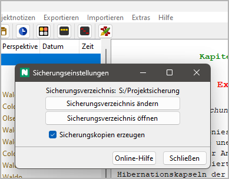

Extras-Menü
Vermischte Funktionen
Bemerkung
Das Extras-Menü kann durch Plugins um zusätzliche Funktionen erweitert werden.
Sicherungseinstellungen
Projektunabhängige Programmeinstellungen
Mit Extras > Sicherungseinstellungen können Sie einen Dialog mit Einstellungen für die Datensicherung öffnen.
Oben im Fenster wird der Pfad zum Sicherungsverzeichnis angezeigt, falls eines eingestellt ist.
Sicherungsverzeichnis ändern
Damit öffnen Sie einen Verzeichnisauswahldialog, mit dem Sie das Sicherungsverzeichnis auswählen können.
Tipp
Um einem Festplattenausfall vorzubeugen, können Sie auch ein externes Laufwerk oder einen USB-Stick angeben.
Sicherungsverzeichnis öffnen
Damit öffnen Sie das Sicherungsverzeichnis mit dem Dateimanager. Das dient dem schnellen Zugriff, falls Sie eine Projektdatei wiederherstellen wollen.
Sicherungskopien erzeugen
Wenn dieses Feld angekreuzt ist, erzeugt novelibre bei jedem Abspeichern
eine Kopie der Projektdatei im eingestellten Sicherungsverzeichnis.
Um zu verhindern, dass versehentlich mit dieser Sicherungskopie gearbeitet
wird, erhält ihre Dateinamenserweiterung den Zusatz #.
Hinweis
Damit können sie die Datensicherung zeitweililg abschalten, wobei das Sicherungsverzeichnis eingestellt bleibt.
Installationsordner öffnen
Die Dateiverwaltung aufrufen
Mit Extras > Installationsordner öffnen können Sie den novelibre-Installationsordner im Dateimanager öffnen. Das kann praktisch sein, wenn Sie Konfigurationsdateien bearbeiten oder eigene Plugins installieren wollen.
Pluginmanager
Die installierten Plugins anzeigen und verwalten
Mit Extras > Plugin manager können Sie den Installierte Plugins-Dialog öffnen.
Erfolgreich installierte Plugins werden standardmäßig schwarz auf weiß dargestellt.
Veraltete Plugins werden ausgegraut.
Plugins, die nicht funktionieren, werden zusammen mit einer Fehlermeldung in roter Schrift dargestellt.
- Wie Sie ein Plugin aktualisieren
Wählen Sie das Plugin aus, das Sie aktualisieren wollen. Falls die Homepage-Schaltfläche aktiviert ist, können Sie darauf klicken, und Ihr System-Webbrowser öffnet die Homepage. Andernfalls müssen Sie die Quelle des Plugins selbst kennen.
Gehen Sie zur Plugin-Homepage und laden Sie die neueste Version herunter. Installieren Sie das Plugin gemäß Anleitung.
- Wie Sie ein Plugin deinstallieren
Wählen Sie das Plugin aus und klicken Sie auf die Löschen-Schaltfläche.
Über die Kompatibilität von Versionen
Auf dem Fensterrahmen sehen Sie die Version von novelibre, die aus drei Zahlen besteht, die durch Punkte getrennt sind.
<Hauptversionsnummer>.<Nebenversionsnummer>.<Patchlevel>
In der Spalte novelibre API sehen Sie die Kompatibilitätsinformation des Plugins, die aus zwei zurch einen Punkt getrennte Zahlen besteht.
<Hauptversionsnummer>.<Nebenversionsnummer>
- Die Regel für die Kompatibilität
Die novelibre API-Hauptversionsnummer des Plugins muss mit der Hauptversionsnummer von novelibre übereinstimmen.
Die novelibre API Nebenversionsnummer des Plugins muss kleiner oder gleich wie die Nebenversionsnummer von novelibre sein.
- Inkompatibilität beheben
Wenn die novelibre API-Hauptversionsnummer des Plugins größer als die Hauptversionsnummer von novelibre ist, muss novelibre aktualisiert werden.
Wenn die novelibre API-Hauptversionsnummer des Plugins kleiner als die Hauptversionsnummer von novelibre ist, muss das Plugin aktualisiert werden.
Wenn die novelibre API Nebenversionsnummer des Plugins größer als die Nebenversionsnummer von novelibre ist, muss novelibre aktualisiert werden.
Notizen anzeigen
Einen HTML-Report mit allen „Haftmerkern“ anzeigen
Mit Extras > Notizen anzeigen erzeugen Sie eine als Tabelle formatierte HTML-Seite mit allen „Haftmerkern“ zusammen mit den Titeln der Baumelemente, denen sie zugeordnet sind, und starten Ihren System-Webbrowser zur Anzeige.
Bemerkung
Der Report ist eine temporäre Datei, die bei Programmbeendigung automatisch gelöscht wird. Lassen Sie sie bei Bedarf von Ihrem Browser sichern oder ausdrucken.